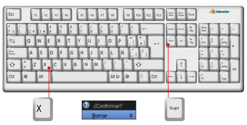
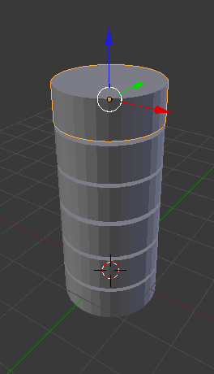

Borrar y Duplicar
De Borrar poco podemos decir. Sin embargo la usaremos para aprender que hay al menos otra forma de ejecutar la transformaciones, aunque es casi seguro que nunca se utiliza. Se trata de usar los menús.
En el menú del editor Vista 3D está la secuencia Objeto/Borrar, de la misma manera que hubiéramos podido encontrar Objeto/Transformaciones... pero nuevamente la optimización del trabajo nos lleva a preferir la tecla "Supr" o la tecla "X" para conseguir el mismo fin. En los tres casos se nos pide confirmación a través de un pequeño mensaje ¿Confirmar?.
Para Duplicar sí suele ser más habitual usar el menú Objeto/Duplicar Objetos pero para una edición rápida es recomendable "Shift_D"...
...sobre todo por el hecho de que esta edición, además de crear el duplicado, pone en marcha Mover. Cuando hacemos el duplicado no termina la operación ahí, sino que Blender queda a la espera de que desplacemos el segundo objeto. Es por eso que de nuevo vuelve a ser muy importante tener el puntero del ratón bien situado antes de dar la orden. Si tras la creación del duplicado culminamos con clic izquierdo o "Intro" sin haber desplazado el segundo objeto, éste se quedará coincidiendo geométricamente con el primero y eso es muy poco recomendable al aparecer caras coplanares que se convertirán en un quebradero de cabeza llegado el momento.
Ejercitación
Saca un cilindro (Añadir/Malla/Cilindro) a la escena y tras escalarlo en Z, para que quede más achatado, coge soltura haciendo duplicados y desplazándolos en Z. Primero "Shift_D" y, sin pulsar "Intro", restringe en Z ("Shift_D Z"); después mueve el ratón hasta la localización nueva y finaliza la edición.
